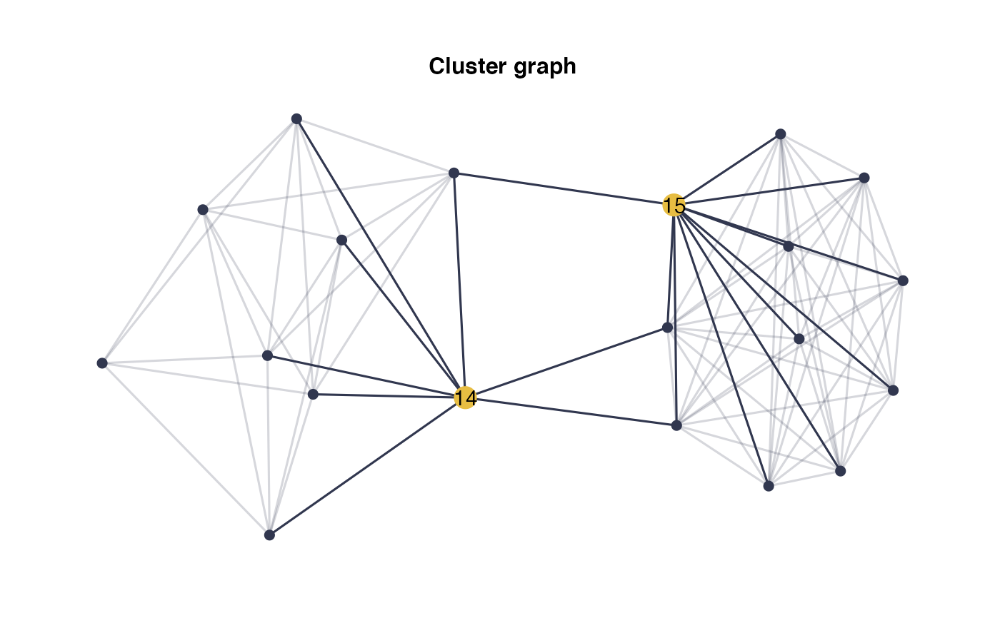

Plots a network
draw_network( adj_matrix, title = "", label_size = 4, curv = 0, width = 1, shade = FALSE, remove_isolated = FALSE, btw_rank = 2, layout = NULL, stored_layout = NULL, nodes_label = NULL, nodes_size = c(2, 5), pal_edges = NULL, pal_nodes = NULL, node_groups = NULL, edge_groups = NULL, legend = FALSE, leg.pos = "bottom", title.family = "sans", title.size = 12 )
| adj_matrix | graph adjacency matrix |
|---|---|
| title | graph title |
| label_size | size of labels |
| curv | edges curvature |
| width | maximum width for the edges |
| shade | if TRUE, shades the edges unlinked to nodes with high betweenness |
| remove_isolated | Removes isolated nodes if TRUE |
| btw_rank | betweenness rank +1 of highlighted nodes. If set to 1, none are highlighted. |
| layout | optional layout from `ggraph` or `ìgraph` package. |
| stored_layout | optional data.frame of point positions from a previous graph, possibly created using ggraph::create_layout() |
| nodes_label | optional labels for nodes. |
| nodes_size | size of nodes, possibility to specify a size per group |
| pal_edges | optional palette for edges |
| pal_nodes | optional palette for nodes |
| node_groups | optional vector separating the nodes into groups |
| edge_groups | optional matrix specifying groups of edges |
| legend | optional boolean for generating a legend when groups are provided |
| leg.pos | optional legend position ("bottom", "top", "right" or "left") |
| title.family | font family of the title |
| title.size | font size of the title |
G the network as a ggplot2 object, with highlighted high betweenness nodes
graph_data data needed for plotting the network
legend ggplot2 information about the legend
set.seed(1) adj_matrix= SimCluster(p=20,k=2,dens=0.5, r=10) groups=sample(3,20, replace=TRUE) draw_network(adj_matrix,"Cluster graph", layout="stress", shade=TRUE, btw_rank=3)$Gdraw_network(adj_matrix,"Cluster with groups of nodes", layout="stress", shade=TRUE, btw_rank=3, node_groups=groups, legend=TRUE,title.family="mono",title.size=12)$G